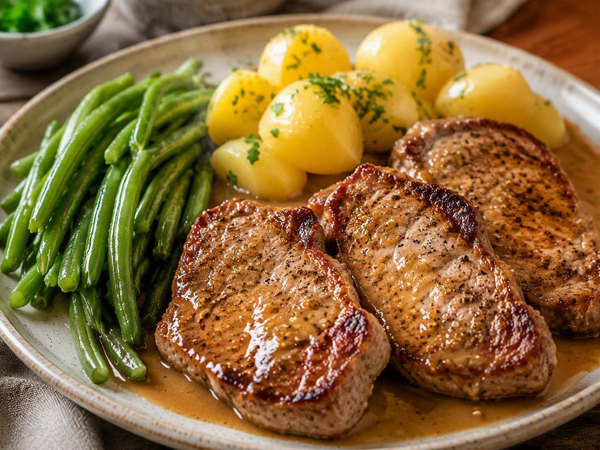

Vrijdag · Vlees
Filetlapjes met sperziebonen, aardappelen en mosterdjus
Gezonde gezinsmaaltijd voor drie personen: filetlapjes met sperziebonen, aardappelen en mosterdjus.

Ingrediënten
- 3 filetlapjes
- 250 g sperziebonen, schoongemaakt
- 750 g aardappelen, geschild
- 1 ui, fijngesneden
- 1 el mosterd
- 150 ml bouillon
- 1 el vloeibare bakolie
- Peper en kruiden naar smaak
Bereiding
- Kook de aardappelen in circa 20 minuten gaar.
- Kook de sperziebonen 8 tot 10 minuten, zodat ze gaar maar nog stevig zijn.
- Verhit de olie en bak de filetlapjes volgens dikte in 6 tot 9 minuten gaar. Neem ze uit de pan en houd warm.
- Fruit de ui in dezelfde pan. Voeg bouillon en mosterd toe en laat enkele minuten inkoken tot een lichte jus.
- Serveer de filetlapjes met aardappelen, sperziebonen en mosterdjus.